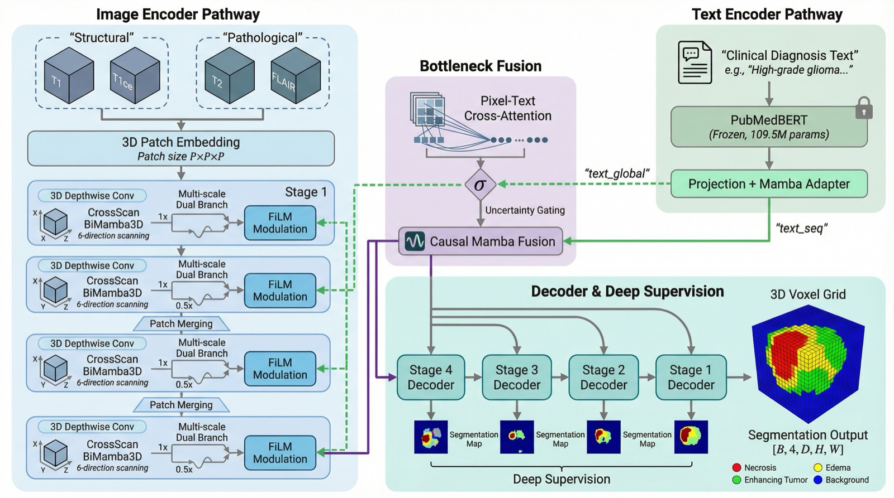
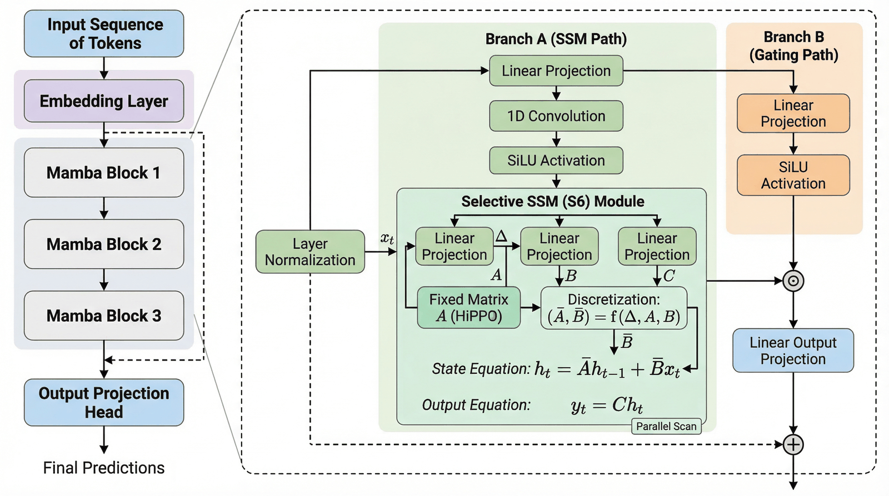
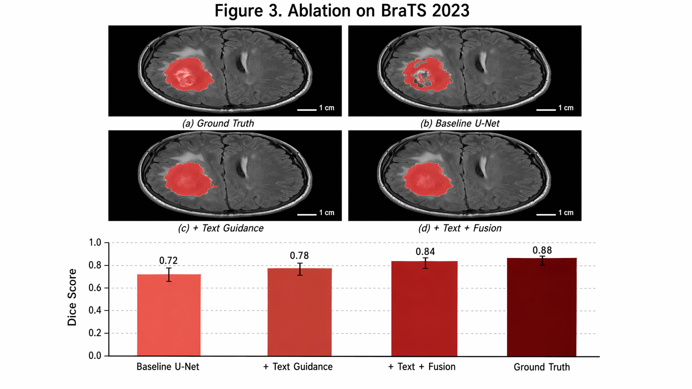

核心判断：AI 产品的护城河不在模型，在数据。这个判断在生产环境落成过实践：评测体系 0→1、多源数据污染根治、评分算法从 spec 到上线。
算法 spec 执笔、指标体系与判档规则设计、架构决策记录，把模糊的业务口径收敛成单一事实源。
LLM-as-judge 评测体系、黄金测试集与回归门禁、badcase 分析闭环、数据质量治理与血缘归因、A/B 实验。
Python / Go / SQL、gRPC 微服务、大规模数据管线，以 AI 结对开发编排把产品定义直接落成生产代码。
今日永恒（Everlyme）· 数据策略产品经理实习生 · 2026.05 至今 · 深圳。产品线是 AI 健康管家 Everly：多源健康数据接入 → 数据可信度治理 → 评分算法 → 生成式报告解读 → 个性化目标。我负责其中数据可信、算法与评测三段，任个性化目标模块 owner。
新用户没有历史数据，首份报告决定信任与留存。负责报告生成链路的生产化与质量体系。
体检报告非结构化、解读依赖人工。从零建设数据侧解析、判档与评测底座。
评分要可信，先让数据可信；数据要可信，先让污染可归因。
A*STAR（新加坡科技研究局）两段研究经历，主线一以贯之：数据质量对模型表现的支配作用。
基于统一 Mamba 架构系统研究文本引导 3D 脑肿瘤分割，从模型实现、受控实验到科学发现的完整研究闭环，论文撰写中。

把日常工程方法论做成可复用的 Claude Code skill 生态：插图生成、异构交叉审查、多源文献扫描、任务契约编译，每一个都源自真实工作流的沉淀。全部公开在 github.com/PlutoLei。
生成出版级学术插图的 Claude Code skill，从研究论文原型运营成持续迭代的开源产品。

